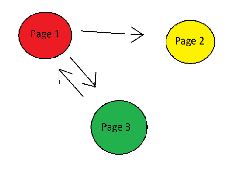

Struktur Page dan Link#

Page 1 -> Page 2 & Page 3 | Page 2 -> Page 3 | Page 3 -> Page 1
Representasi Matriks Adjacency#
Matriks Adjacency A = $$
(38)#\[\begin{bmatrix}
0 & 1 & 1\\
0 & 0 & 1\\
1 & 0 & 0\\
\end{bmatrix}\]
\[### Normalisasi Matriks Adjacency
Normalisasi dilakukan dengan membagi setiap elemen kolom dengan jumlah total elemen di kolom tersebut.\]
(39)#\[\begin{bmatrix}
0 & 0 & 1\\
0.5 & 0 & 0\\
0.5 & 1 & 0\\
\end{bmatrix}\]
\[### Menambahkan Damping Factor
Untuk menghindari dead ends (halaman tanpa outbound links) dan spider traps (loop di mana halaman hanya mengarah ke dirinya sendiri atau halaman lain di loop), kita menambahkan faktor peredam
d (biasanya 0.85)\]
G = d \times M + \frac{(1-d)}{n} \times \mathbf{1} $$
Di mana:
d adalah faktor peredam (biasanya 0.85).
n adalah jumlah halaman
1 adalah matriks yang elemen-elemennya semua bernilai 1/n.
\[\begin{split}
G = 0.85 \times M + \frac{0.15}{3} \times \begin{bmatrix}
1 & 1 & 1 \\
1 & 1 & 1 \\
1 & 1 & 1 \\
\end{bmatrix}
\end{split}\]
\[\begin{split}
G = 0.85 \times \begin{bmatrix}
0 & 0 & 1 \\
0.5 & 0 & 0 \\
0.5 & 1 & 0 \\
\end{bmatrix} + 0.05 \times \begin{bmatrix}
1 & 1 & 1 \\
1 & 1 & 1 \\
1 & 1 & 1 \\
\end{bmatrix}
\end{split}\]
\[\begin{split}
G = \begin{bmatrix}
0.05 & 0.05 & 0.9 \\
0.475 & 0.05 & 0.05 \\
0.475 & 0.9 & 0.05 \\
\end{bmatrix}
\end{split}\]
Menghitung PageRank#
Nilai Awal Setiap Halaman : $\( PR = \begin{bmatrix} \frac{1}{n} \\ \frac{1}{n} \\ \frac{1}{n} \\ \end{bmatrix} = \begin{bmatrix} 0.333 \\ 0.333 \\ 0.333 \\ \end{bmatrix} \)$
Langkah Iteratif#
\[
PR_{\text{baru}} = G \times PR
\]
Implementasi Pada Phython#
import numpy as np
A = np.array([
[0, 1, 1],
[0, 0, 1],
[1, 0, 0]
])
M = A / np.sum(A, axis=0)
n = A.shape[0]
d = 0.85
G = d * M + (1 - d) / n
PR = np.ones(n) / n
tol = 1e-6
delta = 1
while delta > tol:
PR_new = G @ PR
delta = np.linalg.norm(PR_new - PR, 1)
PR = PR_new
sorted = np.argsort(PR)[::-1]
sorted_PR = PR[sorted]
pages = ["Page 1", "Page 2", "Page 3"]
sorted_pages = [pages[i] for i in sorted]
result = list(zip(sorted_pages, sorted_PR))
print(result)
[('Page 1', 0.3973997021243512), ('Page 3', 0.38778974680569855), ('Page 2', 0.21481055106995048)]